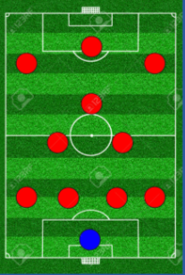

EQUIPO
informacion entrenador
- Nombre del equipo:Combo AG
- nombre jugador: GEORGE sanchez
- Edad: 17 año(s)
- dorsal: 10
- posicion: MCO
- categoria: 2007
- años en el equipo: 1 año(s)
- sede: timiza
- sexo: masculino
FORMACION

ENTRENAMIENTOS PERSONALIZADOS
no tienes entrenamientos asignados
FORMACION
- 19. DARWIN MENDOZA REINOSO(POR)
- 14. DANIEL TAPIA (LI)
- 17. OMAR NIÑO LOPÉZ(DFC)
- 04. SEBASTIAN CALDERÓN(DFC)
- 13. NICOLAS CANGREJO (LD)
- 10. JUSTIN LINDERMEYER(MC)
- 44. FELIPE RODRIGUEZ (MCO)
- 69. ALEJANDRO BONCES (ED)
- 11. GEORGE SANCHEZ (DC)
- 09. KEVIN VALDÉZ (EI)